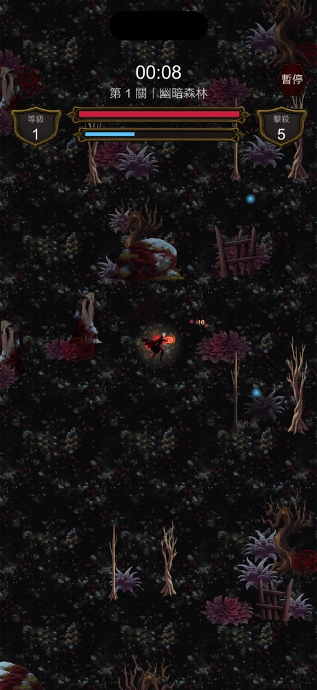
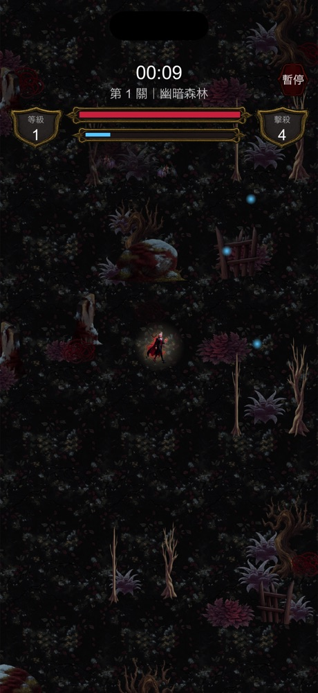
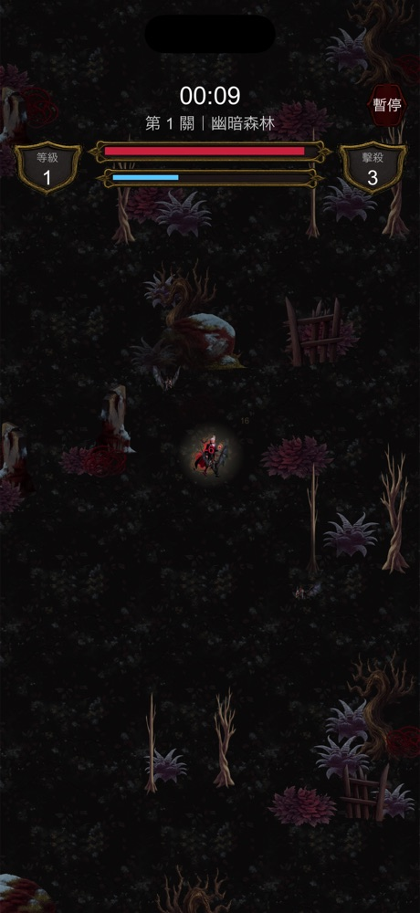
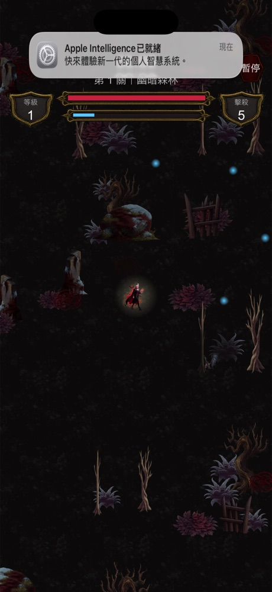
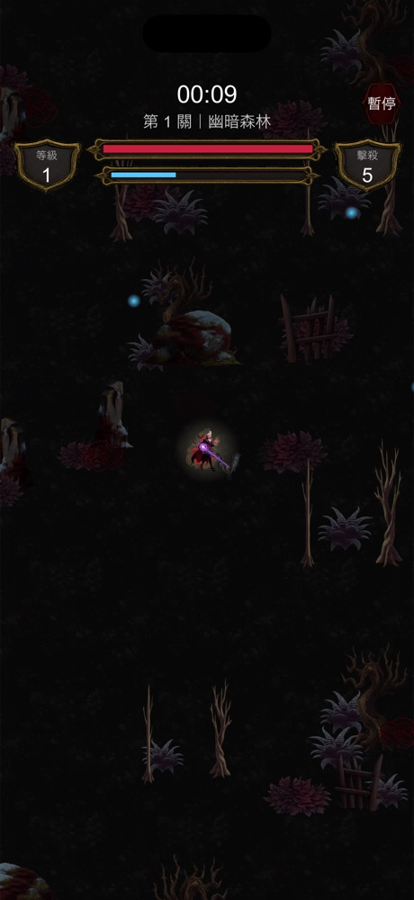
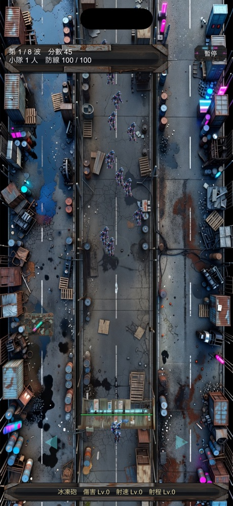
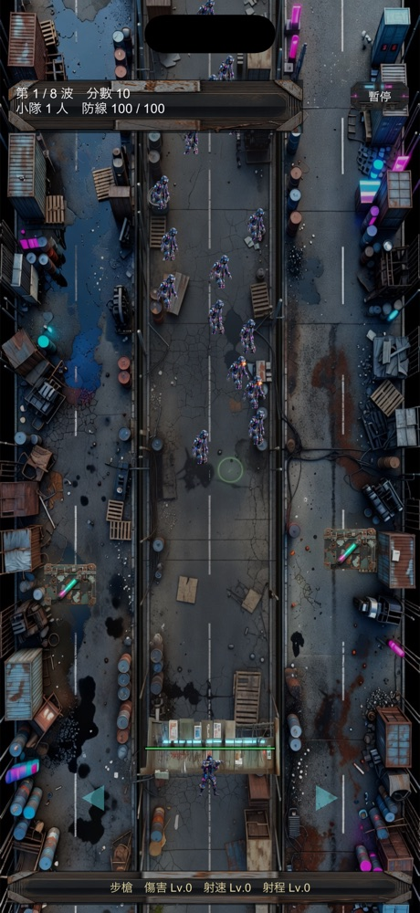
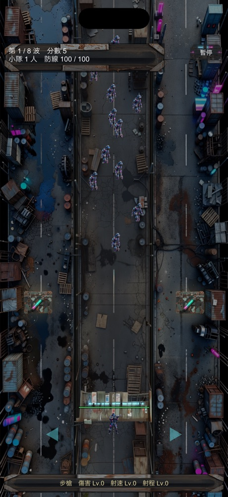
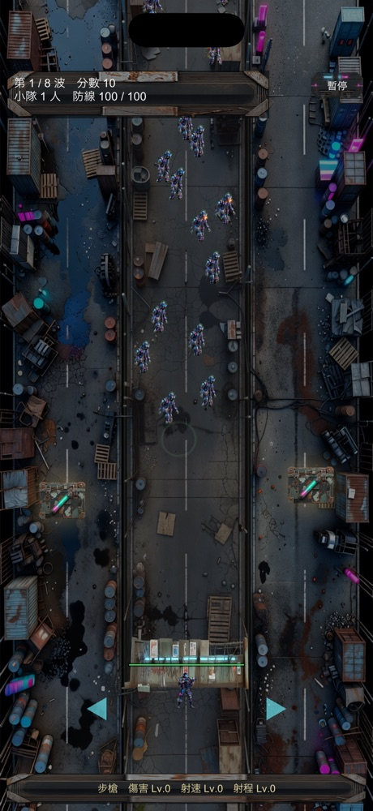

吸血鬼復仇 · 殭屍防線
目標是讓角色與敵人不要跟場地融在一起。先量素材再動手， 結論跟直覺相反——問題不是飽和度，是明度，而且還有紋理太碎這一半。
| 吸血鬼 | 平均明度 |
|---|---|
| 地面 | 0.042–0.083 |
| 裝飾物 | 0.131–0.261 |
| 角色 | 0.185 |
| 敵人 | 0.241 |
地面其實分得很開，問題在裝飾物——它們的亮度幾乎整段落在角色區間裡： 魔王城堡 15/15 件、冰雪絕地 12/12 件、深淵沼澤 13/13 件全部重疊， 只有血月荒原（3/12）是好的。
| 殭屍防線 | 平均明度 |
|---|---|
| 街道底圖 | 0.303 |
| 殭屍 | 0.282 |
| 槍手 | 0.266 |
| 魔王 | 0.291 |
| 路障 | 0.339 |
街道底圖正落在所有單位的正中央。那是整面背景不是零星裝飾， 所以比吸血鬼更嚴重。
飽和度不要動。角色 0.36、敵人 0.45，裝飾物 0.11–0.31—— 那一項本來就分開了。再拉開只會讓場地變灰、失去氣氛。
壓暗降低整體亮度。收斂把地面往它自己的平均色收，讓紋理變平。 這兩件事不一樣：你回饋「地面還是很花」時，畫面已經壓暗過了—— 碎花是高頻亮點，壓暗降不掉它。
量到的地面局部對比：冰雪 σ=14.4、城堡 10.7、森林 8.7， 而唯一沒有重疊問題的血月荒原只有 4.7。
收斂用的是該關地面自己的平均色，不是灰色——往自己的平均收， 紋理變平但色調不變，森林不會被洗成灰的。









| 要決定的 | 為什麼不能我自己決定 |
|---|---|
| 吸血鬼要選哪一版 | c（收斂 50%）到 e（全開）之間是「看得清楚」與「保留氣氛」的取捨。這款的賣點就是暗，壓過頭會變成另一個遊戲 |
| 殭屍要選哪一版 | 同上。大幅壓暗分離最好，但日間街道會變得偏夜晚——那會影響晝夜循環的意義 |
| 外框光要不要留 | 它最有效，但會讓畫面更「遊戲感」、少一點寫實。這是美術方向不是技術問題 |
只拍了第一關（幽暗森林）與殭屍的日間街道。冰雪絕地 σ=14.4 是五關裡 最花的，魔王城堡 10.7 次之——那兩關的實際效果還沒看過， 同一組數值不保證同樣合適。
外框光的顏色還沒調過。目前是玩家暖白、吸血鬼敵人暗紅、 殭屍冷綠、魔王偏紅，這組配色只驗了「分得開」，沒驗好不好看。